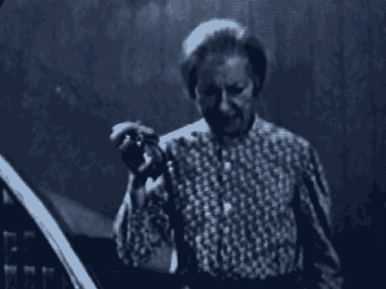

2 A. I was sent to Nairobi, Kenya.
3 Q. Were you with a particular team?
4 A. Yes. I was the team leader of an evidence response team
5 from the New York office.
6 Q. I'm going to move ahead to your duties in August of 1998
7 to the time period of August 24th, 1998.
8 A. Yes.
9 Q. On that day were you assigned any particular duties as
10 part of your responsibility for the evidence response team?
11 A. Yes, I was.
12 Q. Can you tell the jury what you did that day.
13 A. Yes. On that day I was assigned to take a team to a
14 village in northeastern Kenya, a village named Witu, to
15 conduct a search of a residence.
16 Q. And can you tell us as best you can recall who the team
17 was composed of. You don't need to tell us the names, but
18 tell us if they were American or Kenyan officials.
19 A. Including myself, there were a total of seven American
20 personnel. There was also one Kenyan CID officer who
21 accompanied us from Nairobi. There was also a, I believe a
22 Kenyan national with him, and we were met en route by an
23 additional Kenyan CID officer and some Kenyan military
24 personnel, who served as escorts.
25 Q. You mentioned a Kenyan natural who traveled with you.
1812
1 What was the name of that person?
2 A. I don't know his name. I was led to understand, however,
3 he was the brother-in-law of one of the individuals whose
4 residence we were going to search.
5 Q. And when you got to Witu, did you find the location?
6 A. Yes, we did.
7 Q. And how did you get inside the location?
8 A. The Kenyan police, the Kenyan CID, were able to get us
9 access. I don't recall specifically how we initially gained
10 access.
11 Q. Do you know if the brother-in-law of the person helped get
12 in at all?
13 A. In the interior he helped us get into part of the house
14 that was -- but not initially.
15 Q. During the course of the search or during the course of
16 the day did you take photographs of this residence in Witu?
17 A. Yes, we did.
18 Q. Let me approach you with what is premarked as Government
19 Exhibit 709A through D.
20 If I could ask you to look at those pictures, and if
21 we could also display it on the screen for counsel and the
22 witness only at this time, and ask you to tell us whether or
23 not those are fair and accurate photographs of the location
24 that you conducted a search of on August 24th, 1998.
25 A. Yes, they are.
1813
1 MR. FITZGERALD: Your Honor, I would offer Government
2 Exhibits 709A through D.
3 MR. HERMAN: No objection.
4 THE COURT: Received.
5 (Government Exhibits 709A through 709D received in
6 evidence)
7 BY MR. FITZGERALD:
8 Q. If we could now display 709 to the public and to the jury,
9 and Agent Leadbetter, if you could describe what we're seeing
10 in this photograph.
11 A. Yes, this is a view looking at the rear of the residence.
12 There is an area that's covered that is kind of a workshop
13 area, and then you have the rear wall of the house itself.
14 Q. Did you understand this to be the residence of Mohamed
15 Odeh?
16 A. Yes.
17 Q. And can you now take us to 709B and describe what we see
18 in that picture.
19 A. This is a view looking along the side of the same
20 residence.
21 Q. And go to 709C next.
22 A. This is a view from the road in front of the residence,
23 looking at the front.
24 Q. And finally, 709D.
25 A. Yes, this is from the side entrance to the residence where
1814
1 we initially entered. Looking inside to the right is the main
2 part of the house, and to the left there are some additional
3 rooms at the rear of the residence.
4 Q. During the course of the search you conducted, did you
5 make a sketch of the interior layout of this residence?
6 A. Yes, I did.
7 Q. Let me approach you with what has been premarked as
8 Government Exhibit 708. If we could also display that to
9 counsel and the witness only for the moment, and I'll ask you
10 to look at that and tell us if you recognize what that is.
11 A. Yes, this is the sketch I prepared of the residence.
12 Q. Is that, to the best of your ability, a fair and accurate
13 sketch of the way the residence appeared to you on that day in
14 terms of the layout of the rooms?
15 A. Yes, it does.
16 MR. FITZGERALD: Your Honor, I would offer Government
17 Exhibit 708.
18 THE COURT: Received.
19 (Government Exhibit 708 received in evidence)
20 MR. HERMAN: No objection.
21 BY MR. FITZGERALD:
1